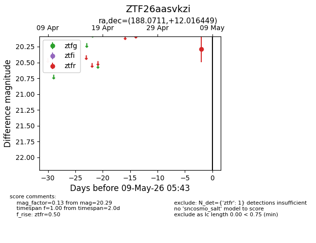
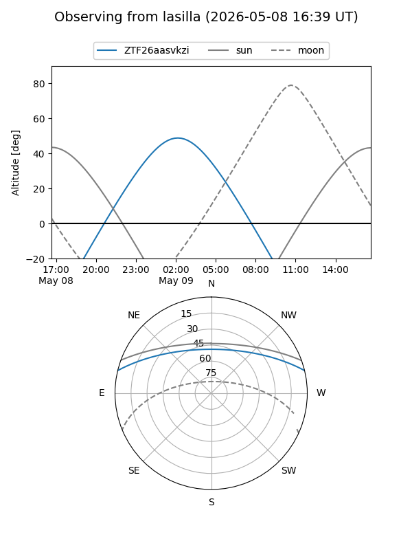
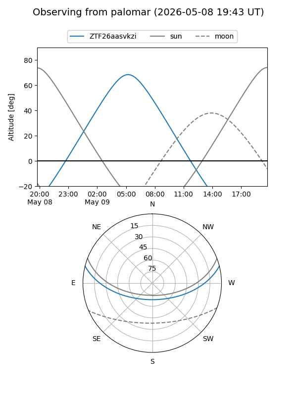

ZTF26aasvkzi
Target ZTF26aasvkzi at 2026-05-09 05:44
Aliases and brokers:
FINK: link
Lasair: link
ALeRCE: link
alt names
ZTF26aasvkzi (ztf,fink_ztf)
Coordinates:
equatorial (ra, dec) = 188.0711,+12.01645
equatorial (HMS+DMS) = 12:32:17.06,+12:00:59.22
galactic (l, b) = (285.4444,+74.23429)
Flags:
Photometry:
last ztfr=20.29
1 ztfr detections
Lightcurve

Visibility


Additional plots